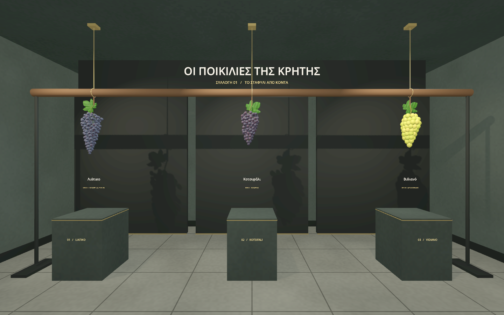
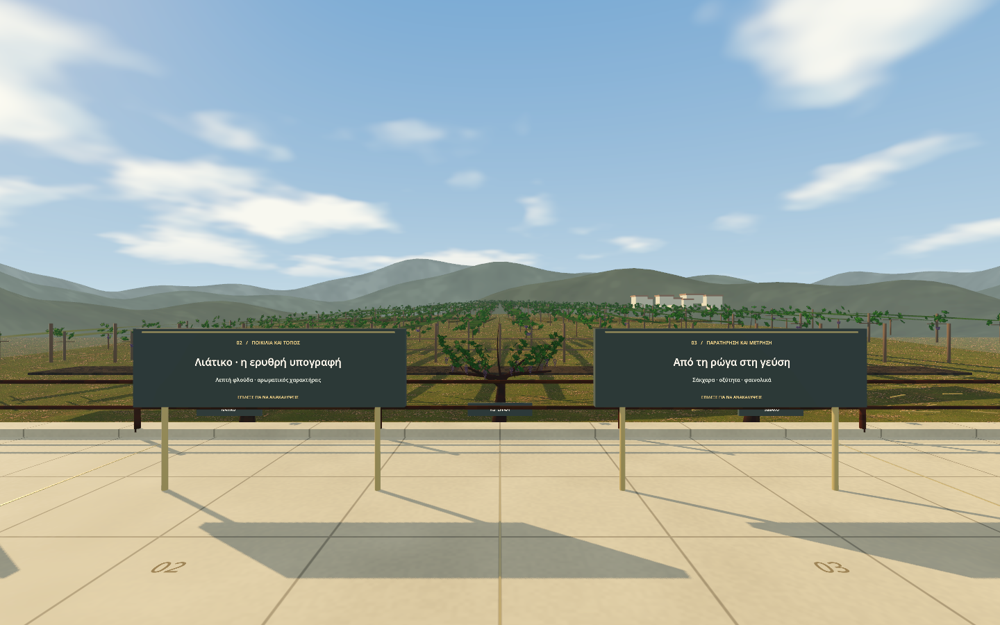
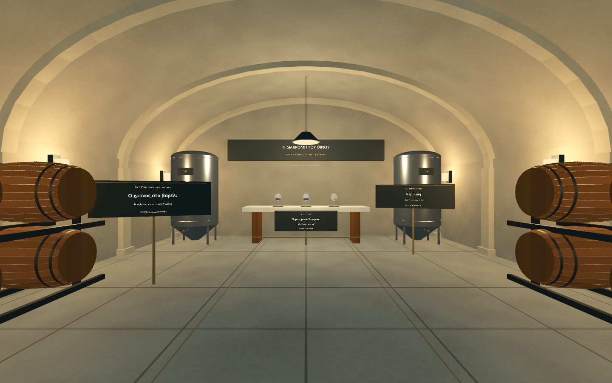

01
ΠΑΡΑΤΗΡΗΣΗ
Η συλλογή
Περίστρεψε το τσαμπί, δες τη ρώγα από κοντά και σύγκρινε τα εκπαιδευτικά προφίλ των ποικιλιών.
ΑΠΟ ΤΟΝ ΤΟΠΟ ΣΤΗ ΡΩΓΑ
Ένα ταξίδι στον κόσμο του κρητικού οίνου. Πιάσε το σταφύλι, γνώρισε τον αμπελώνα και ακολούθησε τη διαδρομή του κρασιού.
Στον browser σου. Με ποντίκι, αφή ή συμβατή συσκευή XR.

Λιάτικο ✦ Κοτσιφάλι ✦ Βιδιανό
Η ΔΙΑΔΡΟΜΗ
Από τη λεπτομέρεια της ρώγας στο τοπίο της Κρήτης. Εξερεύνησε με τον δικό σου ρυθμό και σύνδεσε όσα βλέπεις με όσα μαθαίνεις.
ΠΑΡΑΤΗΡΗΣΗ
Περίστρεψε το τσαμπί, δες τη ρώγα από κοντά και σύγκρινε τα εκπαιδευτικά προφίλ των ποικιλιών.

02Ο ΤΟΠΟΣ
Γνώρισε τη σύνδεση των Δαφνών με το Λιάτικο, μέσα σε ένα τοπίο εμπνευσμένο από την κρητική γη.

03Η ΜΕΤΑΜΟΡΦΩΣΗ
Ακολούθησε τον τρύγο, τη ζύμωση και την ωρίμαση. Παρατήρησε πώς η πρώτη ύλη γίνεται κρασί.
Τα περιβάλλοντα είναι καλλιτεχνικές αναπαραστάσεις. Οι κλίμακες σύγκρισης είναι εκπαιδευτικές· δεν αποτελούν εργαστηριακή ανάλυση πραγματικού δείγματος.
ΠΡΙΝ ΞΕΚΙΝΗΣΕΙΣ
Η βασική περιήγηση γίνεται στην οθόνη. Οι λειτουργίες VR και AR εμφανίζονται όταν τις υποστηρίζουν η συσκευή και ο browser σου.
Άνοιγμα σε ξεχωριστή καρτέλαΓια browser μέσα σε headset, προτίμησε την ξεχωριστή καρτέλα και επίλεξε VR ή AR από το μενού της εφαρμογής.
WASD κίνηση · ποντίκι για ματιά · E επιλογή.
Σε οθόνη αφής χρησιμοποίησε τα χειριστήρια της εφαρμογής.
Άνοιξε την εφαρμογή σε συμβατό browser με ασφαλή σύνδεση. Η άδεια και η έναρξη της συνεδρίας γίνονται μέσα στο Grapes of Crete.
ΣΕ ΑΥΤΟΝ ΤΟΝ BROWSER
Ο έλεγχος δείχνει τις δυνατότητες που αναφέρει ο browser. Η διαθεσιμότητα επιβεβαιώνεται κατά την έναρξη.